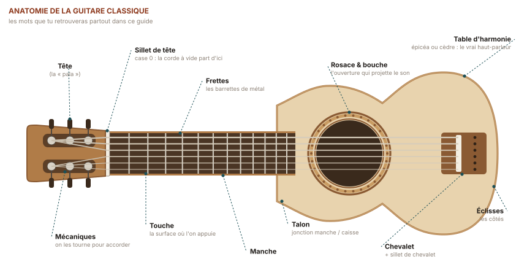
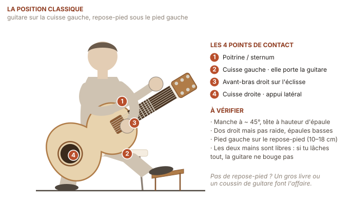
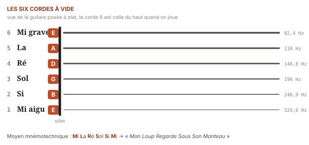
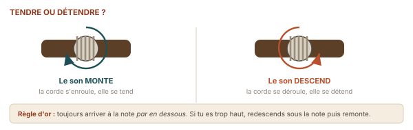
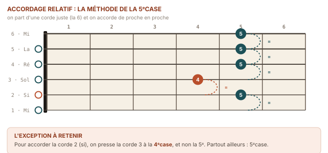

Accorder sa guitare
Une guitare désaccordée sabote l'oreille avant même la première note.
Une guitare désaccordée n'est pas seulement désagréable : elle t'apprend de fausses références. Ton oreille enregistre ce qu'elle entend, et si elle entend faux tous les jours pendant huit semaines, elle apprend faux. Deux minutes d'accordage au début de chaque séance sont le meilleur investissement de tout ce guide.
D'abord, savoir nommer les choses
Avant d'accorder, il faut pouvoir désigner. Voici les cinq mots dont tu auras besoin en permanence dans la suite du guide.

✳ Le mot
Frette (du vieux français
frete, « anneau, cerclage ») — la petite barrette de métal
incrustée en travers du manche. Elle ne se joue pas : elle sert de butée. Quand
tu appuies, c'est la frette, et non ton doigt, qui détermine la hauteur de la note.
Case — l'espace entre deux frettes. On compte
à partir du sillet : la case 1 est la plus proche de la tête. Dire
« 5e case » signifie « l'espace situé juste après la
5e frette ».
Sillet (diminutif de
seuil) — la petite pièce d'os ou de plastique, en haut du manche, où
les cordes quittent le manche pour aller vers les mécaniques. C'est la
« frette zéro » : une corde jouée à vide vibre du sillet
jusqu'au chevalet.
Comment tenir la guitare
La posture n'est pas une question d'élégance, c'est une question de libération : tant que tes mains servent à tenir l'instrument, elles ne peuvent pas servir à en jouer. Une guitare bien posée tient toute seule, sans l'aide d'aucune des deux mains.

- Assieds-toi au bord de la chaise, dos droit mais pas raide, les deux pieds au sol. Pas de fauteuil, pas d'accoudoirs, pas de canapé.
- Surélève le pied gauche de 12 à 18 cm (repose-pied, gros livre, marche). La cuisse gauche monte ; c'est elle qui portera l'instrument.
- Pose l'échancrure de la caisse sur la cuisse gauche. Le manche part vers le haut selon un angle d'environ 45°, la tête à peu près à hauteur de ton épaule.
- Vérifie les quatre appuis : cuisse gauche, poitrine, avant-bras droit sur l'éclisse, cuisse droite en appui latéral. Lâche les deux mains : la guitare ne doit pas bouger.
⚠ Piège classique
Se pencher pour regarder ses doigts. Tout le monde le fait au début, et tout le monde y gagne un dos douloureux et une main gauche qui travaille à un angle faussé. Autorise-toi à regarder — mais incline la tête, pas le buste, et remonte le manche plutôt que de descendre les yeux. Au bout de trois semaines tu regarderas beaucoup moins : la main gauche construit sa propre carte.
Les six cordes et leurs noms
Les cordes se numérotent de la plus aiguë à la plus grave : la corde 1 est la plus fine, tout en bas quand la guitare est en position de jeu ; la corde 6 est la plus épaisse, tout en haut. C'est contre-intuitif, et c'est universel : toutes les tablatures du monde suivent cette numérotation.

✳ Le mot
À vide (en anglais open string) — se dit d'une corde qu'on fait sonner sans poser aucun doigt de la main gauche dessus. Elle vibre alors sur toute sa longueur utile, du sillet au chevalet, et donne sa note la plus grave. Dans les diagrammes d'accords, un O au-dessus d'une corde signifie « joue-la à vide » ; un X signifie « ne la joue pas du tout ».
◆ Le moyen mnémotechnique
De la 6e à la 1re : Mi La Ré Sol Si Mi. En français, la phrase qui sauve : « Michel lave Régulièrement Solange, Sinon Minuit ». En lettres : E A D G B E. Récite-la à voix haute pendant que tu grattes les cordes une par une : en trois séances, c'est acquis pour la vie.
✦ Le sais-tu ?
Pourquoi cet accordage bizarre, avec un intervalle plus petit entre la 3e et la 2e corde qu'entre toutes les autres ? Parce qu'il est un compromis vieux de cinq siècles. Un accordage entièrement régulier (de quarte en quarte) rendrait les accords faciles à transposer mais atrocement difficiles à attraper : la main devrait s'ouvrir d'une case de plus sur chaque accord majeur. En « cassant » la régularité d'un demi-ton entre Sol et Si, les luthistes de la Renaissance ont rendu jouables, d'une seule main, la plupart des accords de la musique occidentale. Cette petite irrégularité est la raison pour laquelle la guitare est l'instrument d'accompagnement le plus répandu au monde.
Accorder avec un accordeur : la méthode
C'est la méthode à utiliser tous les jours. Un accordeur à pince coûte une douzaine d'euros et se clipse sur la tête : il « entend » par les vibrations du bois, donc il fonctionne même dans une pièce bruyante. Une application gratuite sur téléphone fait parfaitement l'affaire dans le silence.

- Commence par la 6e corde (la plus épaisse), et descends jusqu'à la 1re. L'ordre : E — A — D — G — B — E.
- Joue la corde à vide, une seule fois, assez fort, et laisse-la sonner. Ne la rejoue pas pendant que tu tournes : l'accordeur a besoin d'une note stable.
- Lis la lettre affichée. Si ce n'est pas la bonne, tu es à côté d'un demi-ton ou plus : tourne franchement jusqu'à voir apparaître la bonne lettre, puis affine.
- Ajuste jusqu'à l'aiguille centrale. Aiguille à gauche (ou « ♭ ») = trop bas, il faut tendre ; à droite (ou « ♯ ») = trop haut, il faut détendre.
- Finis toujours en montant. Si tu as dépassé, redescends nettement en dessous puis remonte. C'est ce qui empêche la corde de se « retasser » et de redescendre toute seule dix minutes plus tard.
- Refais un tour complet. Tendre une corde modifie la tension du manche et donc les cinq autres. Deux passages sont normaux, trois sur une guitare neuve.
✳ Le mot
Demi-ton — le plus petit écart de hauteur utilisé
dans la musique occidentale : exactement une case sur la guitare.
Le ton en vaut deux, soit deux cases. C'est l'unité de
mesure qui reviendra dans tout ce guide.
Dièse (♯) et bémol (♭) —
les deux signes qui montent ou descendent une note d'un demi-ton. Sur un accordeur,
ils signalent simplement « tu es un peu trop haut » ou « un peu trop
bas ».
Hertz (Hz) — le nombre de vibrations par seconde. La
référence mondiale est le la 3 à 440 Hz : vérifie que
ton accordeur est bien réglé sur 440 et pas sur 432 ou 442.
Accorder sans accordeur : la méthode de la 5e case
À connaître pour le jour où la batterie du téléphone est vide — et surtout parce que la pratiquer forme l'oreille mieux que n'importe quel exercice. Le principe : une corde pressée à la 5e case donne exactement la même note que la corde voisine jouée à vide.

| Je joue… | …et j'accorde | Notes |
|---|---|---|
| 6e corde, case 5 | 5e corde à vide | La (A) |
| 5e corde, case 5 | 4e corde à vide | Ré (D) |
| 4e corde, case 5 | 3e corde à vide | Sol (G) |
| 3e corde, case 4 | 2e corde à vide | Si (B) — l'exception |
| 2e corde, case 5 | 1re corde à vide | Mi (E) |
Cette méthode accorde la guitare avec elle-même : il faut donc partir d'une 6e corde juste. Sers-toi d'un piano, d'un diapason, ou de la note de référence ci-dessous.
♪ Écoute · la note de référence
Mi grave — 82,41 Hz · note de référence pour la 6e corde
Laisse tourner la note, joue ta 6e corde à vide par-dessus, et écoute les battements : cette pulsation régulière « ouah-ouah » qui apparaît quand deux notes sont presque identiques. Plus les notes se rapprochent, plus les battements ralentissent. Quand ils disparaissent complètement, tu es juste. C'est le plus bel outil de l'accordage à l'oreille, et il ne demande aucun talent : seulement de l'attention.
Ce qu'il faut savoir sur les cordes nylon
Tu joues sur une guitare classique, et cela change une chose importante : le nylon est un plastique, pas un métal. Il flue — il s'allonge lentement sous la tension pendant plusieurs jours.
◆ Cordes neuves
Un jeu de nylon neuf se désaccorde en permanence pendant trois à sept jours. C'est normal, ce n'est pas la faute de tes mécaniques. Accélère la stabilisation en tirant doucement chaque corde vers le haut, de 2 ou 3 cm, au milieu du manche, puis en réaccordant. Répète cinq ou six fois.
◆ Température
Le nylon réagit vite au froid et à la chaleur. Une guitare qui sort d'un couloir frais sera fausse : laisse-la dix minutes dans la pièce avant d'accorder. Et n'accorde jamais juste après avoir sorti l'instrument d'une voiture.
⚠ Piège classique
Monter des cordes métal sur une guitare classique. La tension d'un jeu acier est presque deux fois supérieure à celle d'un jeu nylon ; une table de guitare classique, qui n'a pas de barre de réglage dans le manche, se déforme puis décolle. Le dégât est irréversible. Vérifie sur le paquet : nylon, classical ou classique, tension normale ou forte.
✦ Le sais-tu ?
Jusqu'en 1946, les guitares « classiques » étaient montées en boyau — véritablement de l'intestin de mouton, filé et séché. Le matériau sonnait magnifiquement et cassait tout le temps, se désaccordait à chaque changement d'humidité, et devint introuvable pendant la Seconde Guerre mondiale. C'est Albert Augustine, un luthier new-yorkais, qui eut l'idée d'essayer le nylon fraîchement inventé par DuPont ; Andrés Segovia accepta de le tester, l'adopta, et en fit la norme mondiale en une décennie. Le son de la guitare classique que nous connaissons aujourd'hui date donc, pour l'essentiel, de l'après-guerre.
★ Petite victoire
Accorde ta guitare sans regarder les lettres de l'accordeur : devine d'abord « trop haut » ou « trop bas », puis vérifie. Trois bonnes réponses sur six dès la première fois ? Ton oreille fonctionne déjà. Refais le test en semaine 4 : tu seras à cinq ou six.
⚑ Défi · le désaccordage volontaire
Ferme les yeux, détends légèrement une corde au hasard (un quart de tour, pas plus), rouvre les yeux et retrouve-la à l'oreille seule, sans accordeur, en comparant avec ses voisines par la méthode de la 5e case. C'est l'exercice d'oreille le plus rentable qui existe : trente secondes, une fois par semaine.